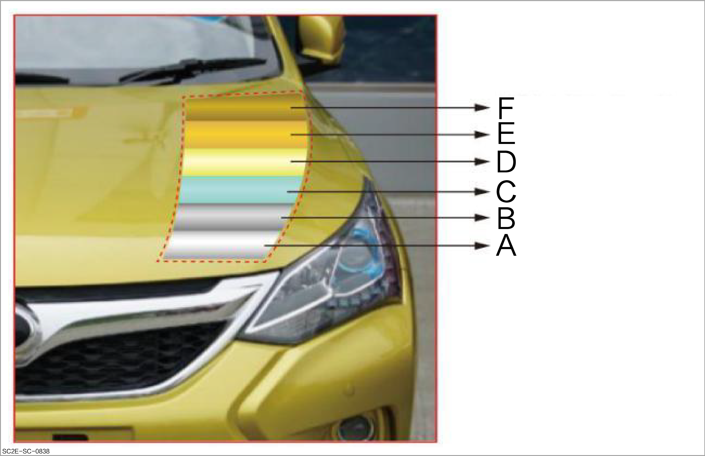

Automotive coating is a crucial link in automobile manufacturing. It not only concerns the appearance of a vehicle, but also directly affects its protection, durability and corrosion resistance. The automotive coating system usually consists of multiple layers, and each layer has its specific function. The following is a detailed description of the automotive coating:

A: Vehicle body steel panel
B: Zinc phosphate coating (4-5 um):
Zinc phosphate coating is a chemical conversion film treatment method, in which a crystalline film of zinc phosphate is formed on the metal surface by immersing the metal component in a solution containing phosphate and reacting under suitable conditions. A chemical reaction on the metal surface is involved in this process to form a layer of phosphate compound.
Zinc phosphate coating can significantly improve the corrosion resistance of metal surface, mainly because zinc has the characteristics of sacrificial anode. When the coating is damaged, zinc will preferentially corrode over iron to protect the base material. This coating can also improve the adhesion of subsequent coatings and is often used as a pre-treatment step before painting.
C: Electrophoretic primer layer (15-50 um):
It is the bottom layer of automotive coating, and is directly coated on the pre-treated vehicle body steel panel.
Through the electrophoretic deposition technology, the charged paint particles form a uniform coating on the vehicle body surface, featuring an excellent corrosion resistance.
The electrophoretic layer can penetrate into all corners and gaps of the vehicle body, providing comprehensive anti-rust protection.
D: Intermediate paint layer (30-40 um):
It is located on the electrophoretic layer, and mainly used to further enhance the anti-rust ability and improve the adhesion with the colored paint layer.
It can also fill up the tiny pits and defects of the electrophoretic layer, making the surface smoother and providing a better base for the colored paint layer.
Anti-stone-striking materials are sometimes added to the intermediate coating to increase the vehicle body's resistance to external impacts.
For the implementation method, refer to Spraying of intermediate paint
E: Colored paint layer (15 um):
The colored paint layer is responsible for giving the vehicle its unique color and visual effect, and can be plain, metallic or pearlescent paint.
This paint contains pigments or special effect particles (such as aluminum powder and mica flakes) to provide rich color and luster for the vehicle.
Anti-stone-striking materials are sometimes added to the intermediate coating to increase the vehicle body's resistance to external impacts.
The quality of the colored paint layer directly affects the appearance attractiveness of automobile.
For the implementation method, refer to:
F: Varnish coating (30-40 um):
As the outermost layer, the varnish coating is a transparent coating. It is mainly used to protect the colored paint layer, improve the glossiness, and provide additional weather resistance and wear resistance.
The varnish coating makes the vehicle surface as smooth as a mirror and easy to clean, and can effectively resist the erosion of external environment such as ultraviolet rays and acid rain.
For the implementation method, refer to: